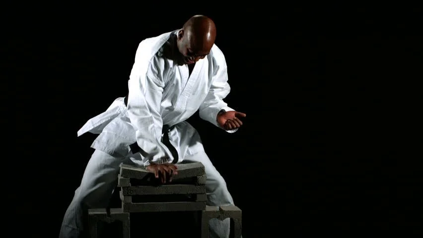
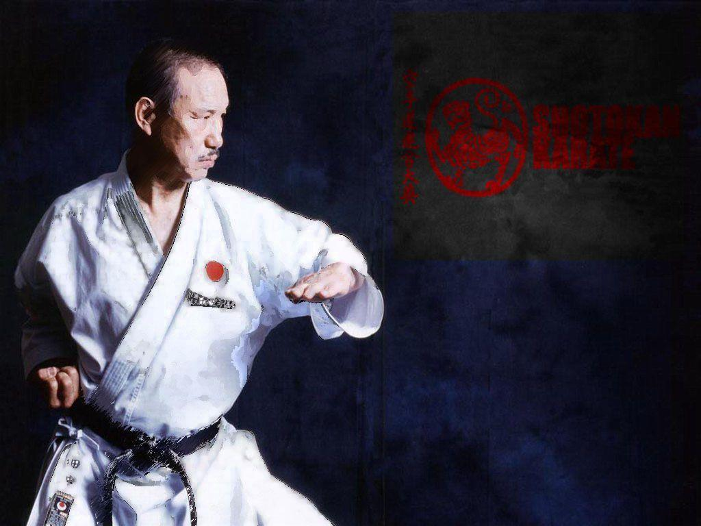

Somos
Fuerza | Concentracion | Valor | Superacion Personal



El presente Política de Privacidad establece los términos en que Karate Shotokan - Dojo Takeshi usa y protege la información que es proporcionada por sus usuarios al momento de utilizar su sitio web. Esta compañía está comprometida con la seguridad de los datos de sus usuarios. Cuando le pedimos llenar los campos de información personal con la cual usted pueda ser identificado, lo hacemos asegurando que sólo se empleará de acuerdo con los términos de este documento. Sin embargo esta Política de Privacidad puede cambiar con el tiempo o ser actualizada por lo que le recomendamos y enfatizamos revisar continuamente esta página para asegurarse que está de acuerdo con dichos cambios.
Información que es recogida
Nuestro sitio web podrá recoger información personal por ejemplo: Nombre, información de contacto como su dirección de correo electrónica e información demográfica. Así mismo cuando sea necesario podrá ser requerida información específica para procesar algún pedido o realizar una entrega o facturación.
Uso de la información recogida
Nuestro sitio web emplea la información con el fin de proporcionar el mejor servicio posible, particularmente para mantener un registro de usuarios, de pedidos en caso que aplique, y mejorar nuestros productos y servicios. Es posible que sean enviados correos electrónicos periódicamente a través de nuestro sitio con ofertas especiales, nuevos productos y otra información publicitaria que consideremos relevante para usted o que pueda brindarle algún beneficio, estos correos electrónicos serán enviados a la dirección que usted proporcione y podrán ser cancelados en cualquier momento.
Karate Shotokan - Dojo Takeshi está altamente comprometido para cumplir con el compromiso de mantener su información segura. Usamos los sistemas más avanzados y los actualizamos constantemente para asegurarnos que no exista ningún acceso no autorizado.
Cookies
Una cookie se refiere a un fichero que es enviado con la finalidad de solicitar permiso para almacenarse en su ordenador, al aceptar dicho fichero se crea y la cookie sirve entonces para tener información respecto al tráfico web, y también facilita las futuras visitas a una web recurrente. Otra función que tienen las cookies es que con ellas las web pueden reconocerte individualmente y por tanto brindarte el mejor servicio personalizado de su web.
Nuestro sitio web emplea las cookies para poder identificar las páginas que son visitadas y su frecuencia. Esta información es empleada únicamente para análisis estadístico y después la información se elimina de forma permanente. Usted puede eliminar las cookies en cualquier momento desde su ordenador. Sin embargo las cookies ayudan a proporcionar un mejor servicio de los sitios web, estás no dan acceso a información de su ordenador ni de usted, a menos de que usted así lo quiera y la proporcione directamente noticias. Usted puede aceptar o negar el uso de cookies, sin embargo la mayoría de navegadores aceptan cookies automáticamente pues sirve para tener un mejor servicio web. También usted puede cambiar la configuración de su ordenador para declinar las cookies. Si se declinan es posible que no pueda utilizar algunos de nuestros servicios.
Enlaces a Terceros
Este sitio web pudiera contener en laces a otros sitios que pudieran ser de su interés. Una vez que usted de clic en estos enlaces y abandone nuestra página, ya no tenemos control sobre al sitio al que es redirigido y por lo tanto no somos responsables de los términos o privacidad ni de la protección de sus datos en esos otros sitios terceros. Dichos sitios están sujetos a sus propias políticas de privacidad por lo cual es recomendable que los consulte para confirmar que usted está de acuerdo con estas.
Control de su información personal
En cualquier momento usted puede restringir la recopilación o el uso de la información personal que es proporcionada a nuestro sitio web.
Esta compañía no venderá, cederá ni distribuirá la información personal que es recopilada sin su consentimiento, salvo que sea requerido por un juez con un orden judicial.
Karate Shotokan - Dojo Takeshi Se reserva el derecho de cambiar los términos de la presente Política de Privacidad en cualquier momento.
Dojo TAKESHI